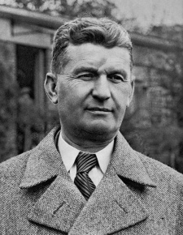
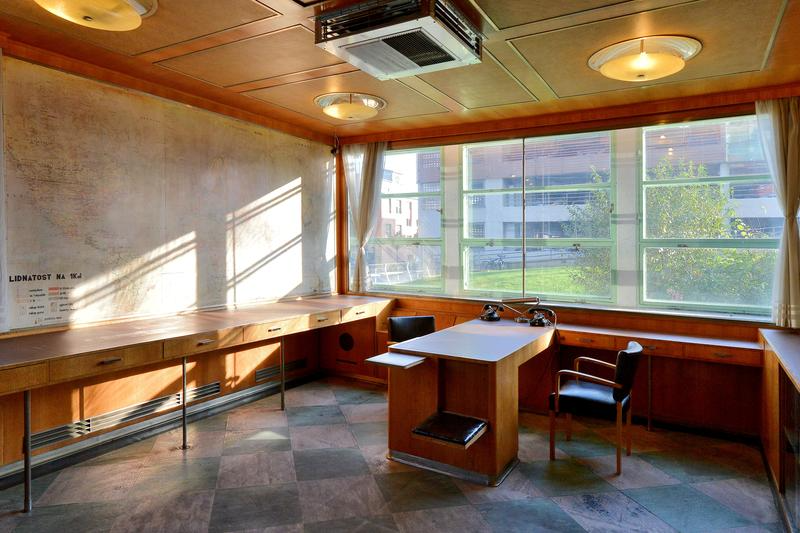
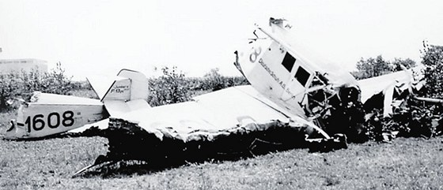

Tomáš Baťa se narodil 3. dubna 1876 ve Zlíně v rodině obuvníka. Od mládí vyrůstal v prostředí řemesla a práce. Již jako mladý kluk pomáhal v dílně svého otce a osvojoval si základní principy obuvnictví. Jeho pracovní morálka, cílevědomost a touha po inovacích ho brzy odlišily od ostatních. S bratrem Antonínem a sestrou Annou založil v roce 1894 malou firmu, která se postupně proměnila v jeden z největších obuvnických podniků na světě.
Prvních několik let bylo velmi těžkých. Firma čelila nedostatku financí, konkurenci a technickým problémům. Baťa však věřil, že klíčem k úspěchu je levná a kvalitní obuv dostupná široké veřejnosti. V roce 1897 přišel s revolučním nápadem: plátěné boty s koženou podrážkou – levné, lehké a praktické. Tento produkt firmu katapultoval do popředí českého trhu. Baťa investoval do strojů, technologií a nových výrobních metod. Využíval inspiraci ze zahraničí, především z Ameriky, ale vždy ji přizpůsobil domácím podmínkám. Díky tomu se podařilo firmu stabilizovat a rozšířit její produkci. Jeho přístup byl moderní: nechtěl jen prodávat boty, chtěl tvořit celý systém výroby, distribuce a života.

Tomáš Baťa vytvořil propracovaný systém řízení, který dnes označujeme jako „Baťův systém“. Každá část firmy fungovala jako samostatná jednotka – malé firmy uvnitř velké firmy. Oddělení mělo vlastní účetnictví, cíl a odpovědnost. Tento systém motivoval k efektivitě, kreativitě a spolupráci. Zaměstnanci byli vedeni k samostatnosti, a zároveň se od nich očekávala vysoká morálka, disciplína a loajalita. Baťa zavedl přehledné mzdové tabulky, systém odměn a trestů, osobní hodnocení i transparentnost nákladů. Každý zaměstnanec věděl, jaký má podíl na výsledku firmy. Mnozí odborníci dodnes považují Baťův styl za předchůdce moderních manažerských metod jako je lean management, decentralizace nebo motivace pomocí vlastnictví výsledku práce.
Baťa nebyl jen podnikatel – byl také sociální reformátor. Věřil, že spokojený a vzdělaný pracovník je základem úspěšné firmy. Z toho důvodu nechal vybudovat celé město Zlín jako „město pro život“ – s moderní infrastrukturou, veřejnou dopravou, školami, nemocnicemi, kulturními domy i sportovišti. Město Zlín bylo vybudováno podle principu funkcionalismu. Vše mělo svůj účel, vše bylo propojeno s výrobou, bydlením a vzděláváním. Bytové domy pro zaměstnance byly prostorné, čisté, moderně vybavené. Každý měl přístup k elektřině, vodě a zahrádce. Baťa říkával: „Chceme lidi nejen zaměstnávat, ale i vychovávat.“ Proto jeho město nebylo jen místem výroby, ale také laboratoří pro rozvoj společnosti.

V roce 1925 vznikla slavná Baťova škola práce – unikátní vzdělávací instituce, která spojovala teorii a praxi. Studenti dopoledne studovali a odpoledne pracovali v provozech. Učili se nejen řemeslu, ale také obchodnímu myšlení, etice, jazykům, ekonomii i technologiím. Cílem bylo vychovávat budoucí vedoucí, kteří rozumí firmě jako celku. Škola byla mezinárodně otevřená – přijímala studenty z mnoha zemí a posílala je do zahraničních poboček firmy. Disciplína, samostatnost, inovace a zodpovědnost byly základními kameny vzdělání. V mnoha ohledech tato škola předběhla svou dobu – připravovala studenty na reálný život, na řízení lidí, na podnikání. Měla vlastní internáty, jídelny, knihovny i poradny.
Tomáš Baťa zahynul 12. července 1932 při letecké havárii na cestě do Švýcarska. Jeho smrt otřásla nejen firmou, ale celou společností. Vedení firmy převzal jeho nevlastní bratr Jan Antonín Baťa, který podnik dále rozšiřoval do světa – do Indie, Jižní Ameriky, Afriky, Kanady i Asie. I po válce, kdy byla firma v Československu znárodněna, pokračoval koncern Baťa v zahraničí – především z Kanady. Dnes má Baťa sídla po celém světě a obsluhuje miliony zákazníků ročně.
Tomáš Baťa je symbolem moderního podnikání s lidskou tváří. Jeho myšlení bylo komplexní – spojoval ekonomiku, vzdělání, sociální péči i architekturu. Věřil, že firma má být službou veřejnosti a nástrojem pro zlepšování společnosti. Jeho citáty jako „Myslete v milionech“, „Nechci být bohatý, chci být užitečný“ nebo „Dělejme věci lépe než ostatní“ jsou dnes inspirací nejen pro podnikatele, ale i pedagogy a manažery. Jeho odkaz žije v architektuře Zlína, v Baťových principech řízení, ve firmách, které se inspirují jeho modelem, a především v lidech, kteří vnímají práci jako službu a vzdělání jako klíč k lepší budoucnosti.